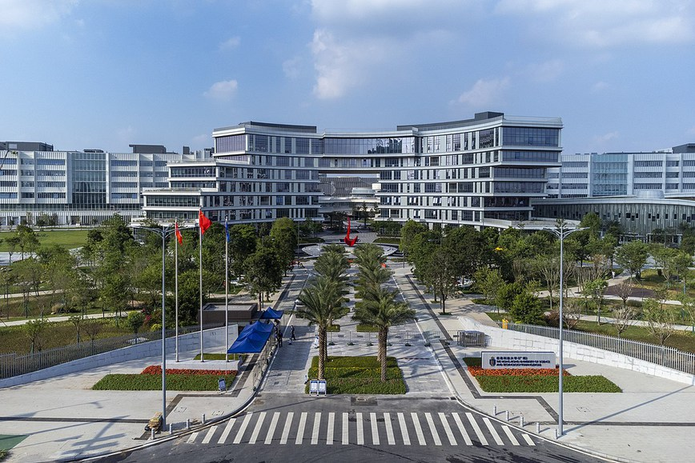
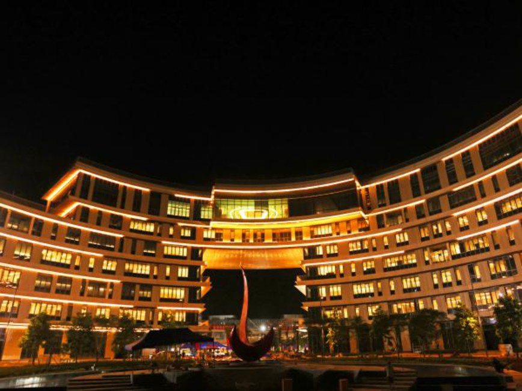
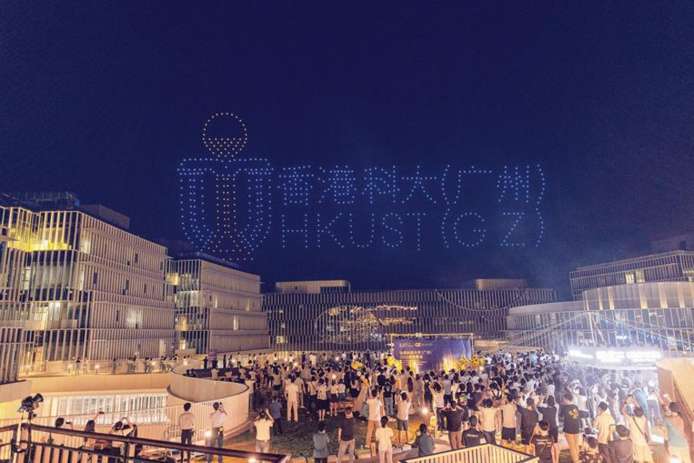
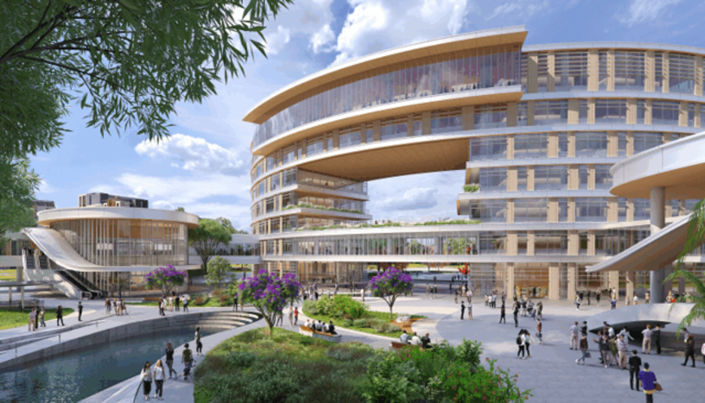
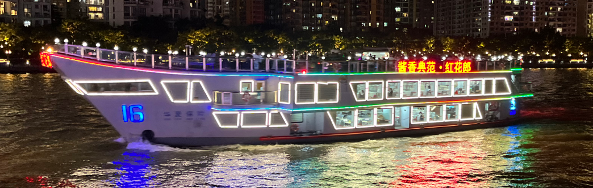
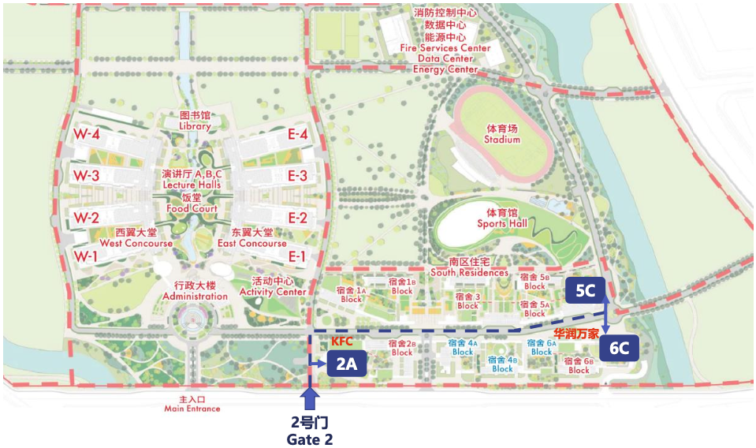

The 16th International Symposium on Visual Information Communication and Interaction (VINCI 2023)
Guangzhou, China, 22-24 September 2023
The 16th International Symposium on Visual Information Communication and Interaction (VINCI 2023)
Guangzhou, China, 22-24 September 2023
The 16th International Symposium on Visual Information Communication and Interaction (VINCI 2023)
Guangzhou, China, 22-24 September 2023

The conference will take place in HKUST (GZ) campus.
The conference is organized by the 'Computational Media and Arts (CMA)' at HKUST (GZ). CMA is a research and academic thrust area within the Information Hub, The Hong Kong University of Science and Technology (Guangzhou). As an interdisciplinary program for computational and radical creativity, CMA brings together visionaries with backgrounds in art, design, science, and engineering to think critically, reach beyond convention and make innovation.



We cordially invite all participants of VINCI 2023 to join us for a banquet on September 23, 2023. The banquet will take place aboard the iconic "Honghualang Insurance Cruise”, offering an opportunity to experience the cultural significance of the Pearl River night cruise, a renowned attraction among "Eight Scenic Spots of Guangzhou."
Exploring the Magic of the Pearl River Night Cruise:
Experience Guangzhou's history and modernity with a Pearl River night cruise. See the city's development over two millennia and witness dazzling lights along the riverbanks. Don't miss this captivating journey!
Embarking on the "Honghualang Insurance Cruise":
Cruise on the Honghualang Insurance ship, modeled after the "Liaoning" aircraft carrier. Enjoy networking and intellectual conversations while admiring the Pearl River's beautiful views.

The banquet on the Honghualang Insurance Cruise promises an unforgettable night of cultural immersion, academic exchange, and delightful cuisine. Don't miss this opportunity to connect with fellow participants and celebrate the intersection of VINCI 2023.
We offer on-campus accommodations. If you wish to make a reservation, please send an email to vinciinfo23@gmail.com. For each person staying in a room, please provide: full name, phone number, gender, check-in date, check-out date, and preferred room type.
Below is detailed information about the dormitories:
| Room Type | Studio | 1-Bedroom | 1-Br + Study | Desposit |
|---|---|---|---|---|
| Price (CNY/day) | 200RMB | 280RMB | 350RMB | No Need |
Note: Daily charge, breakfast is not included. Drinking water for more than one week should be paid at your own expense (350ml drinking water, 1 bottle/day for short-term multiple rooms, 2 bottles/day for other rooms). Water and electricity should be charged for more than 30 days. Compensation should be negotiated in case of damage to items or facilities.
Remark:
Front Desk Contact for Guest Rooms:


Published by ACM International Conference Proceedings Series

Sponsored by The Hong Kong University of Science and Technology (Guangzhou).

Organized by the Computational Media and Arts Thrust, Information Hub